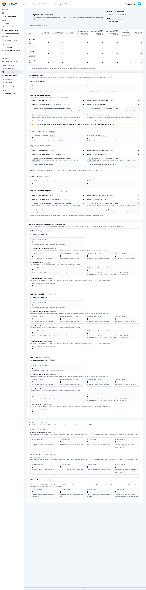
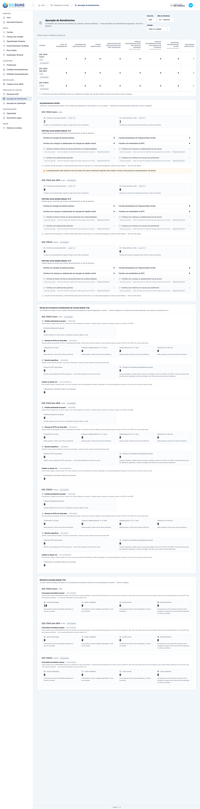

Relatório de Critérios de Aceite — US-BENEF-03
Resumo
Quatorze critérios de aceite. Quatro evidenciados no navegador (CA01, CA03, CA09 e CA10, com quatro prints) e dez cobertos pela suíte automatizada (CA02, CA04, CA05, CA06, CA07, CA08, CA11, CA12, CA13, CA14). A suíte fecha com 20 testes e 68 asserções, em AttendanceReportEventualBenefitTest e EventualBenefitReportServiceTest. Os 4 cenários Playwright passam contra base recém-semeada e persistente, compartilhada com outros specs da fase. Nenhum critério em falha. Os números com massa (cestas básicas, natalidades, funerais) são provados pelo backend; o E2E prova o que é da UI — os quatro contadores acesos, as três naturezas declaradas lado a lado, a ausência do painel de indisponíveis e o zero declarado. Com esta HU o leiaute 15.6 fecha por completo.
| CA | Critério | Situação | Evidência |
|---|---|---|---|
| CA01 | Contadores acesos (happy path) | ATENDIDO | Print + Pest |
| CA02 | Contam concessões, não famílias | ATENDIDO (SUITE) | Pest |
| CA03 | As três formas de contagem declaradas na tela | ATENDIDO | |
| CA04 | Kit, aluguel social e outros somam em "outros benefícios" | ATENDIDO (SUITE) | Pest |
| CA05 | Tipo de atendimento não soma nestes contadores | ATENDIDO (SUITE) | Pest |
| CA06 | Encaminhamento para benefício não soma | ATENDIDO (SUITE) | Pest |
| CA07 | Cancelada não conta | ATENDIDO (SUITE) | Pest |
| CA08 | Retroativo conta no mês da concessão | ATENDIDO (SUITE) | Pest |
| CA09 | Leiaute 15.6 sem indisponíveis | ATENDIDO | Print + Pest |
| CA10 | Unidade sem concessão no período | ATENDIDO | Print + Pest |
| CA11 | Operacional vê apenas as suas unidades | ATENDIDO (SUITE) | Pest |
| CA12 | Isolamento entre municípios | ATENDIDO (SUITE) | Pest |
| CA13 | Tipo inativado continua contando | ATENDIDO (SUITE) | Pest |
| CA14 | Nada é persistido | ATENDIDO (SUITE) | Pest |
CA01 — Contadores acesos (happy path) ATENDIDO
Dado que em 08/2026 o "CRAS Centro" concedeu cestas básicas, auxílios natalidade, auxílios funeral e aluguéis sociais, quando eu consultar a apuração do "CRAS Centro" para o mês de referência, então food_assistance, birth_assistance, funeral_assistance e other_benefits vêm todos com available: true, e eventual_benefits NÃO consta mais em unavailable_counters.
- Os quatro cartões de benefício eventual aparecem acesos — número, nunca travessão — para a unidade "E2E CRAS Centro".
- A aritmética exata (quantas cestas, quantos natalidades) é provada pela suíte de backend com massa controlada; a tela prova que os números, sejam quais forem, chegam ACESOS por unidade.

CA02 — Contam concessões, não famílias ATENDIDO (SUITE)
Dado que a família Silva recebeu TRÊS cestas básicas em agosto de 2026, quando eu consultar a apuração, então food_assistance apresenta 3, e NÃO apresenta 1.
- É o teste que falharia com a contagem de distintos (DoD explícito do épico): massa desenhada de propósito com uma família recebendo três cestas, provando
COUNT(*)em vez deCOUNT(DISTINCT family_id).
Sem prova visual: critério verificado pela suíte automatizada (ver anexo).
CA03 — As três formas de contagem declaradas na tela ATENDIDO
Quando eu olhar os contadores do leiaute 15.6, então os quatro de benefício indicam que somam CONCESSÕES, os dois de CadÚnico indicam que somam FAMÍLIAS distintas, e o de BPC indica que soma PESSOAS distintas.
- As três naturezas ficam declaradas lado a lado, na MESMA captura: o grupo de benefício eventual soma concessões e avisa explicitamente para não somar com CadÚnico nem com BPC; o rótulo de CadÚnico diz "famílias distintas"; o de BPC diz "pessoas distintas" — a natureza OPOSTA à do CadÚnico, no mesmo leiaute.
- É o núcleo deste spec: um gestor que somasse os sete números soltos, ou comparasse auxílio alimentação com famílias encaminhadas ao CadÚnico, estaria comparando coisas que não são a mesma coisa.

CA04 — Kit de emergência, aluguel social e outros somam em "outros benefícios" ATENDIDO (SUITE)
Dado kits de emergência, aluguéis sociais e um benefício do tipo "Outros" em agosto, quando eu consultar a apuração, então other_benefits soma os três juntos.
- Prova que os três códigos que compartilham o mesmo
remittance_counter(3, 5 e 6, D02 da US-BENEF-01) somam de fato no mesmo campo do leiaute.
Sem prova visual: critério verificado pela suíte automatizada (ver anexo).
CA05 — Tipo de atendimento não soma nestes contadores ATENDIDO (SUITE)
Dado atendimentos do tipo "Solicitação ou concessão de benefício eventual" (código 6) e concessões de cesta básica em agosto, quando eu consultar a apuração, então food_assistance reflete só as concessões, e os atendimentos somam apenas em total_attendances.
- Teste dedicado de ausência de dupla contagem (risco R1 do épico): a query de benefício eventual nunca toca
attendances.
Sem prova visual: critério verificado pela suíte automatizada (ver anexo).
CA06 — Encaminhamento para benefício não soma ATENDIDO (SUITE)
Dado encaminhamentos para acesso a benefícios eventuais em agosto, quando eu consultar a apuração, então nenhum dos quatro contadores de benefício foi afetado, e os contadores de CadÚnico e BPC também não.
- Segundo teste dedicado de ausência de dupla contagem: a query de benefício eventual nunca toca
referrals.
Sem prova visual: critério verificado pela suíte automatizada (ver anexo).
CA07 — Cancelada não conta ATENDIDO (SUITE)
Dado que uma das cestas básicas foi cancelada, quando eu consultar a apuração novamente, então food_assistance diminui em uma unidade, e a concessão cancelada continua visível no prontuário da família.
- Massa desenhada com 40 cestas menos 1 cancelada = 39 — a contagem reflete só concessões com
status = 'registered'.
Sem prova visual: critério verificado pela suíte automatizada (ver anexo).
CA08 — Retroativo conta no mês da concessão ATENDIDO (SUITE)
Dado que uma concessão foi registrada com data de lançamento posterior a granted_on, quando eu consultar a apuração do mês de granted_on, então ela está contada nesse mês, e não no mês do lançamento.
- A data que vale é sempre
granted_on— a mesma disciplina dos demais leiautes de execução do período de referência (D10).
Sem prova visual: critério verificado pela suíte automatizada (ver anexo).
CA09 — Leiaute 15.6 sem indisponíveis ATENDIDO
Quando eu olhar o leiaute 15.6 na apuração, então nenhum contador de benefício aparece como indisponível, unavailable_counters vem VAZIO, e o painel de indisponíveis não é renderizado.
- O DADO: o backend não declara mais
eventual_benefits— nem nenhum outro contador do leiaute 15.6 — como indisponível;unavailable_countersvem[]. - A TELA: o painel inteiro deixa de existir no DOM — não fica presente e vazio, ele SOME (
v-if="counters.length > 0"). É o fechamento completo do leiaute 15.6, cobrindo as cinco fases (F1–F5).

CA10 — Unidade sem concessão no período ATENDIDO
Dado que a unidade não concedeu nenhum benefício em referência, quando eu consultar a apuração, então os quatro contadores aparecem com 0 e available: true — zero DECLARADO.
- Verificado na "E2E CRAS Sem MDS" (unidade diferente da do CA01, para não repetir a mesma leitura): os quatro contadores aparecem em 0, com o selo de "zero declarado" — nunca travessão, que é a marca de indisponível.
- A explicação viaja no
titledo selo: zero declarado não é "não sabemos" — é "apuramos e deu zero".
CA11 — Operacional vê apenas as suas unidades ATENDIDO (SUITE)
Dado que sou Operacional lotado apenas no "CRAS Centro", então vejo apenas o "CRAS Centro".
- Reusa o recorte por perfil já existente (
scopeUnits()); o add-on LGPD não é exigido, por ser tela agregada.
Sem prova visual: critério verificado pela suíte automatizada (ver anexo).
CA12 — Isolamento entre municípios ATENDIDO (SUITE)
Sendo usuário do município A, então vejo apenas unidades do município A.
- Verificado que nenhuma concessão de outro município entra em contador nenhum (
tenant_idexplícito na query, RN11).
Sem prova visual: critério verificado pela suíte automatizada (ver anexo).
CA13 — Tipo inativado continua contando ATENDIDO (SUITE)
Dado que o tipo "Cesta Básica" foi inativado depois de usado em agosto, quando eu consultar a apuração de agosto, então as concessões registradas com ele continuam contadas.
- A query nunca filtra
is_activedo tipo (US-BENEF-01 RN05) — inativar não pode apagar meses já prestados ao TCE-AL.
Sem prova visual: critério verificado pela suíte automatizada (ver anexo).
CA14 — Nada é persistido ATENDIDO (SUITE)
Quando eu consultar a apuração duas vezes, então a contagem de linhas de todas as tabelas é idêntica antes e depois.
- Verificado que a apuração é inteiramente derivada — sem cache, sem coluna, sem tabela nova (D01) — e que o payload não devolve identificador de pessoa ou família (RN10/RN12).
Sem prova visual: critério verificado pela suíte automatizada (ver anexo).
Observações e ressalvas
⚠️ As quatro perguntas ao TCE-AL — validação necessária
Quatro decisões que mudam os números enviados na remessa do bloco 12 não vieram do instrumento nem de resposta do Tribunal. Cada uma está isolada em um ponto do código para cair barato — mas, depois de declarado, corrigir significa reenviar.
| # | Pergunta | Regra adotada | Onde cai a correção |
|---|---|---|---|
| 1 | Auxílio alimentação = cesta básica? | Sim | UPDATE em uma linha do cadastro (US-BENEF-01) |
| 2 | Kit de emergência e aluguel social em "outros benefícios"? | Sim | UPDATE em duas linhas do cadastro |
| 3 | Contam concessões ou famílias? | Concessões | Uma linha do service — muda TODOS os números |
| 4 | Concedido em um mês, entregue no outro? | Vale granted_on | Predicado da query |
Destaque para a pergunta 3 (I1): contar concessões (COUNT(*)) em vez de famílias distintas (COUNT(DISTINCT family_id)) é a decisão de maior impacto das quatro — se o Tribunal esperar o oposto, TODOS os números de benefício eventual já declarados mudam, não só um contador isolado. É por isso que o CA02 deste dossiê usa massa desenhada propositalmente para falhar sob a contagem errada (uma família, três cestas básicas, contador deve valer 3): é o teste que garante que a decisão certa foi a implementada, não a análoga aos vizinhos de CadÚnico/BPC (que contam distintos).
Com esta HU o leiaute 15.6 fecha por completo
eventual_benefits era o ÚLTIMO item de UNAVAILABLE_COUNTERS. Removê-lo esvazia o array, e o painel de indisponíveis do client/ — que tem v-if="counters.length > 0" — some sozinho, sem qualquer alteração de template. O leiaute 15.6 (Manual SIAP, item 15.6) fica coberto pelas cinco fases entregues (F1 a F5): não sobra nenhum contador dependente de fase futura.
Anexo I — Cobertura automatizada (Pest 4, filtro EventualBenefit|AttendanceReport)
PASS Tests\Feature\Client\AttendanceReportEventualBenefitTest ✓ it acende os quatro contadores de beneficio no payload da unidade,… 0.45s ✓ it nao alimenta os contadores de beneficio a partir do tipo de aten… 0.15s ✓ it nao alimenta nenhum dos quatro contadores de beneficio nem os de… 0.06s ✓ it devolve unavailable_counters VAZIO e nenhum contador de benefici… 0.05s ✓ it devolve zero DECLARADO nos quatro contadores para a unidade sem… 0.05s ✓ it mostra ao Operacional apenas a unidade em que esta lotado, com o… 0.06s ✓ it nao conta concessao de outro municipio em contador nenhum (CA12) 0.06s ✓ it persiste absolutamente nada ao consultar a apuracao duas vezes (… 0.06s ✓ it nunca vaza dado de cidadao pelos quatro contadores de beneficio,… 0.05s PASS Tests\Feature\Client\EventualBenefitReportServiceTest ✓ it conta CONCESSOES, nao familias distintas — a mesma familia com t… 0.02s ✓ it soma kit de emergencia, aluguel social e "outros" no mesmo conta… 0.03s ✓ it nao conta concessao CANCELADA — 40 cestas menos 1 cancelada = 39… 0.10s ✓ it conta a concessao no mes de granted_on, nao no mes do lancamento… 0.03s ✓ it devolve zero DECLARADO nos quatro contadores para a unidade sem… 0.02s ✓ it continua contando concessao cujo tipo foi INATIVADO depois de us… 0.02s ✓ it nao conta concessao REMOVIDA operacionalmente — deleted_at (RN08… 0.02s ✓ it nao conta concessao de outro municipio (RN11) 0.02s ✓ it curto-circuita sem tocar o banco quando o recorte de unidades e… 0.02s ✓ it nao persiste absolutamente nada — a apuracao e derivada (RN09) 0.02s ✓ it nao devolve nenhum identificador de pessoa ou familia no resulta… 0.02s Tests: 20 passed (68 assertions) Duration: 1.71s
Anexo II — Cenários Playwright (client, 4 cenários)
[globalSetup] Rate-limiter cache do Laravel zerado. Running 6 tests using 2 workers ✓ 1 [setup] › tests/auth.setup.ts:10:6 › autentica super admin (UI) e propaga cookies para o api-client (1.1s) [tenant-auth.setup] sessão de tenant pronta em /Users/binho/Projetos/esuas-all/e2e/.auth/tenant.json ✓ 2 [setup] › tests/tenant-auth.setup.ts:82:6 › autentica usuário do tenant (client) e propaga cookies para o api-client (1.4s) ✓ 3 [chromium-tenant] › tests/client/eventual-benefit-counters.spec.ts:192:7 › US-BENEF-03 — contadores de benefício eventual na apuração (client) › CA01 — os quatro contadores de benefício eventual aparecem ACESOS na apuração, por unidade (5.1s) ✓ 4 [chromium-tenant] › tests/client/eventual-benefit-counters.spec.ts:217:7 › US-BENEF-03 — contadores de benefício eventual na apuração (client) › CA03 — as TRÊS naturezas de contagem do leiaute 15.6 ficam declaradas lado a lado na mesma tela (5.1s) ✓ 5 [chromium-tenant] › tests/client/eventual-benefit-counters.spec.ts:258:7 › US-BENEF-03 — contadores de benefício eventual na apuração (client) › CA09 — o leiaute 15.6 fechou: não existe mais painel de contadores indisponíveis na tela (5.0s) ✓ 6 [chromium-tenant] › tests/client/eventual-benefit-counters.spec.ts:283:7 › US-BENEF-03 — contadores de benefício eventual na apuração (client) › CA10 — unidade sem concessão no período mostra os quatro contadores em zero declarado, com a explicação (5.1s) 6 passed (28.7s)